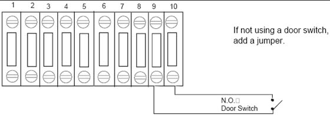

Operating Documentation
Direction 5193574-800, Rev# 22
Module Version 1.0, Version Date 4/22/10
Operating Documentation |
| ||||
| LOCKOUT/TAGOUT IS REQUIRED BEFORE PERFORMING THIS TASK. USE THE SUPPLIED LOTO KIT. | ||||
| ALL INSTALLATION WORK WITHIN THIS SECTION ON THE POWER DISTRIBUTION UNIT SHOULD BE COMPLETED BY A LICENSED ELECTRICIAN ONLY. | ||||
| NOTE: | Connecting the primary incoming power is performed by the customer’s electrical contractor. The electrician needs to provide a reducing bushing to attach the flexible conduit to the PDU |
Roll the PDU into position on its permanently mounted casters. Leave at least 15.5 cm (6 in.) between the PDU and back wall to allow cooling air to circulate.
Run the main input power conductors and ground though flexible metal conduit (attached between the PDU chassis and room duct-work) so you can move the PDU away from the wall during service.
Locate the hole cover plate in Box 1 and attach the flexible metal conduit to the PDU.
If present, remove the TS1 panel front cover.
Strip the wires to fit securely on the power block.
Observe incoming phases (L1, L2, and L3) and insert bare leads into power block.
Insert vault ground into PDU vault ground lug.
Tighten all fasteners securely and replace the TS3 front panel.
| ||||
| WORK WITH THE ELECTRICAL CONTRACTOR TO BE SURE EXTERNAL POWER SOURCE IS TURNED OFF. | ||||
Connect the ground wire (green with a yellow stripe) from the table/gantry raceway ground bus to the system ground lug in the PDU.
Warning light is controlled by signals from the system.
This step is site-specific. The PDU by default is configured for no external warning light connection. If you have external warning lights, see Illustration 5 for proper connection.
| ||||
| WARNING: If a door interlock is used, remove the jumper (terminals 9 and 10). | ||||
Door interlocks are used to prevent x-rays from being generated when the scan room door is open.
To use the system with a door interlock, wire a normally open switch between pins 1 & 2 that is attached to the interlock.
Illustration 7: With a Door Interlock
